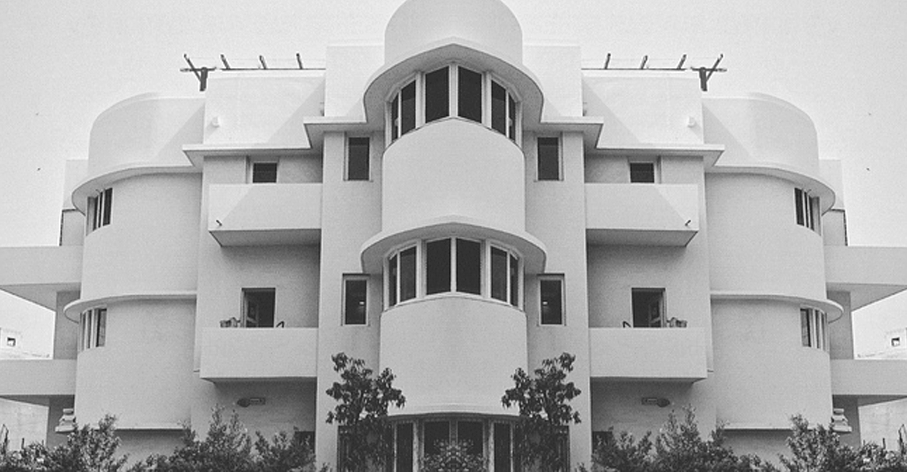
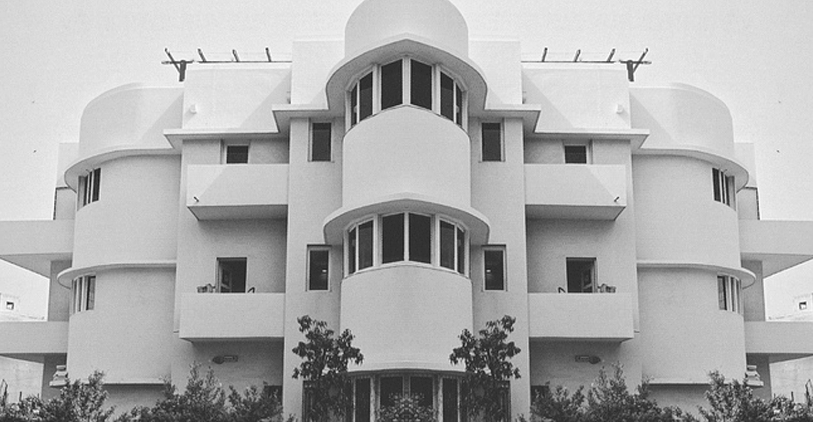

ABOUT
Building CSS font is based on Yusuke Sugomori's font CSS SANS.
The font was made playing with different white and black boxes and their widths.
Throughout changing the CSS SANS font, it developed into Bauhaus inspired faceted and a bit bizarre new font.